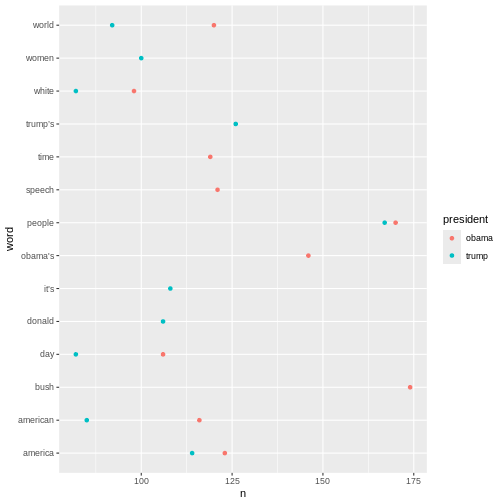

Tidytext, stopwords, and sentiment analysis
Last updated on 2025-03-03 | Edit this page
Overview
Questions
- “How do we prepare text for analysis and measure the sentiment of the text?”
Objectives
- “Using specific packages to perform text preparation and sentiment analysis”
Tokenisation
Since we are working with text mining we focus on the
text coloumn. We do this because the coloumn contains the
text from articles.
To tokenise a coloumn, we use the functions
unnest_tokens() from the tidytext-package. The
function gets two arguments. The first one is word. This
defines that the text should be split up by words. The second argument,
text, defines the column that we want to tokenise.
R
articles_tidy <- articles %>%
unnest_tokens(word, text)
Tokenisation
The result is 118,269 rows. The reason is that the
text-column is replaced by a new column named
word. This columns contains all words found in all of the
articles. The information from the remaining columns are kept. This
makes is possible to dermine which article each word belongs to.
Stopwords
The next step is to remove stopwords. We have chosen to use the
stopword list from the package tidytext. The list contains
1,149 words that are considered stopwords. Other lists are available,
and they differ in terms of how many words they contain.
R
data(stop_words)
stop_words
OUTPUT
# A tibble: 1,149 × 2
word lexicon
<chr> <chr>
1 a SMART
2 a's SMART
3 able SMART
4 about SMART
5 above SMART
6 according SMART
7 accordingly SMART
8 across SMART
9 actually SMART
10 after SMART
# ℹ 1,139 more rowsAdding and removing stopwords
You may find yourself in need of either adding or removing words from the stopwords list.
Here is how you add and remove stopwords to a predefined list.
Add stopwords First, create a tibble with the word you wish to add to the stop words list
R
new_stop_words <- tibble(
word = c("cat", "dog"),
lexicon = "my_stopwords"
)
Then make a new stopwords tibble based on the original on, but with the new words added.
R
updated_stop_words <- stop_words %>%
bind_rows(new_stop_words)
Run the following code to see that the added lexicon
my_stopwords contains two words.
R
updated_stop_words %>%
count(lexicon)
OUTPUT
# A tibble: 4 × 2
lexicon n
<chr> <int>
1 SMART 571
2 my_stopwords 2
3 onix 404
4 snowball 174remove stopword First, create a vector with the word(s) you wish to remove from the stopwords list
R
words_to_remove <- c("cat", "dog")
Then remove the rows containing the unwanted words.
R
updated_stop_words <- stop_words %>%
filter(!word %in% words_to_remove)
Run the following code to see that the added lexicon
my_stopwords nolonger exists.
R
updated_stop_words %>%
count(lexicon)
OUTPUT
# A tibble: 3 × 2
lexicon n
<chr> <int>
1 SMART 571
2 onix 404
3 snowball 174In order to remove the stopwords from articles_tidy, we
have to use the anti_join-function.
R
articles_anti_join <- articles_tidy %>%
anti_join(stop_words, by = "word")
Join and
anti_join
Frequency analysis
A word frequency is a relatively simple analysis. It meassures how often words occur in a text.
R
articles_anti_join %>%
count(word, sort = TRUE)
OUTPUT
# A tibble: 12,328 × 2
word n
<chr> <int>
1 obama 513
2 trump 479
3 president 450
4 people 337
5 inauguration 249
6 america 237
7 world 212
8 american 201
9 time 189
10 day 188
# ℹ 12,318 more rowsThe previous code chunk resulted in a list containing the most frequent words. The words are from articles about both presidents, and they are sorted based on frequency with the highest number on top.
A closer look at the list may reveal that some words are irrelevant. Given that the articles in the dataset are about the two presidents’ respective inaugurations, we consider the words below irrelevant for our analysis. Therefore, we make a new dataset without those words.
R
articles_filtered <- articles_anti_join %>%
filter(!word %in% c("trump", "trump’s", "obama", "obama's", "inauguration", "president"))
articles_filtered %>%
count(word, sort = TRUE)
OUTPUT
# A tibble: 12,322 × 2
word n
<chr> <int>
1 people 337
2 america 237
3 world 212
4 american 201
5 time 189
6 day 188
7 bush 186
8 speech 183
9 white 180
10 washington 150
# ℹ 12,312 more rowsThe words deemed irrelevant are no longer on the list above.
Instead of a general list it may be more interesting to focus on the most frequent words belonging to articles about the two presidents respectively.
R
articles_filtered %>%
count(president, word, sort = TRUE)
OUTPUT
# A tibble: 15,989 × 3
president word n
<chr> <chr> <int>
1 obama bush 174
2 obama people 170
3 trump people 167
4 obama america 123
5 obama speech 121
6 obama world 120
7 obama time 119
8 obama american 116
9 trump america 114
10 trump it’s 108
# ℹ 15,979 more rowsIt can be a bit tricky to keep an overview of the words associated with each president. To that end, a visualisation may help.
R
articles_filtered %>%
count(president, word, sort = TRUE) %>%
group_by(president) %>%
slice(1:10) %>%
ggplot(mapping = aes(x = n, y = word, colour = president)) +
geom_point()
 In the above, we have taken a look at how often words are used in association to each president. In these analyses the words were the guiding principles.
Another interesting thing to look at would be the most frequent words used in relation to each president. In this analysis the president is the guiding principle.
R
articles_filtered %>%
count(president, word, sort = TRUE) %>%
pivot_wider(
names_from = president,
values_from = n
)
OUTPUT
# A tibble: 12,322 × 3
word obama trump
<chr> <int> <int>
1 bush 174 12
2 people 170 167
3 america 123 114
4 speech 121 62
5 world 120 92
6 time 119 70
7 american 116 85
8 it’s NA 108
9 day 106 82
10 donald 1 106
# ℹ 12,312 more rowsR
articles_filtered %>%
group_by(president) %>%
count(word, sort = TRUE) %>%
top_n(10) %>%
ungroup() %>%
mutate(word = reorder_within(word, n, president)) %>%
ggplot(aes(n, word, fill = president)) +
geom_col() +
facet_wrap(~president, scales = "free") +
scale_y_reordered() +
labs(x = "word occurrences")
OUTPUT
Selecting by nR
articles_filtered %>%
count(pillar_name, word, sort = TRUE) %>%
group_by(pillar_name) %>%
slice(1:10) %>%
ggplot(mapping = aes(x = n, y = word, colour = pillar_name)) +
geom_point()
R
articles_anti_join %>%
filter(!word %in% c("trump", "obama", "inauguration", "president")) %>%
count(president, pillar_name, word, sort = TRUE) %>%
group_by(president, pillar_name) %>%
slice(1:10) %>%
ggplot(mapping = aes(x = n, y = word, colour = pillar_name)) +
geom_point() +
facet_wrap(~president)
R
articles_anti_join %>%
filter(!word %in% c("trump", "obama", "inauguration", "president")) %>%
count(pillar_name, word, sort = TRUE) %>%
group_by(pillar_name) %>%
slice(1:10) %>%
ggplot(mapping = aes(x = n, y = word)) +
geom_col() +
facet_wrap(~pillar_name)
Key Points
- “All natural language texts must be prepared for analysis”